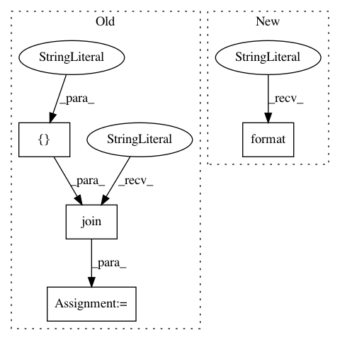

6ae6a7e2bf75ee254292703f040f3a7bc098c7c4,pyntcloud/scalar_fields/__init__.py,,,#,37
Before Change
"sphericity": (["sphericity"], sphericity)
}
ALL_SF = "".join([" {}"] * 7).format(
list(SF_RANSAC),
list(SF_NORMALS),
list(SF_RGB),
list(SF_OCTREE),
list(SF_VOXELGRID),
list(SF_KDTREE),
list(SF_EIGENVALUES)
)
After Change
"sphericity": (["sphericity"], sphericity)
}
ONLY POINTS
--------------
{}
{}
REQUIRE NORMALS
---------------
{}
{}
{}
{}
REQUIRE RGB
-----------
{}
{}
{}
REQUIRE OCTREE
--------------
{}
{}
{}
REQUIRE VOXELGRID
-----------------
{}
{}
{}
{}
{}
{}
REQUIRE KDTREE
--------------
{}
{}
REQUIRE EIGENVALUES
-------------------
{}
{}
{}
{}
{}
{}
{}
{}
.format(
*SF_RANSAC,
*SF_NORMALS,
*SF_RGB,
*SF_OCTREE,
*SF_VOXELGRID,
*SF_KDTREE,
*SF_EIGENVALUES
)
In pattern: SUPERPATTERN
Frequency: 3
Non-data size: 4
Instances
Project Name: daavoo/pyntcloud
Commit Name: 6ae6a7e2bf75ee254292703f040f3a7bc098c7c4
Time: 2017-02-23
Author: daviddelaiglesiacastro@gmail.com
File Name: pyntcloud/scalar_fields/__init__.py
Class Name:
Method Name:
Project Name: daavoo/pyntcloud
Commit Name: c378eecedf0eb9ac4bf131ede59b3eaf1248a55b
Time: 2017-02-23
Author: daviddelaiglesiacastro@gmail.com
File Name: pyntcloud/filters/__init__.py
Class Name:
Method Name:
Project Name: stared/livelossplot
Commit Name: cbd1399b82e9e27cfa54460cb935cb528b276657
Time: 2020-03-19
Author: pmigdal@gmail.com
File Name: livelossplot/__init__.py
Class Name: OldDependenciesFinder
Method Name: find_spec